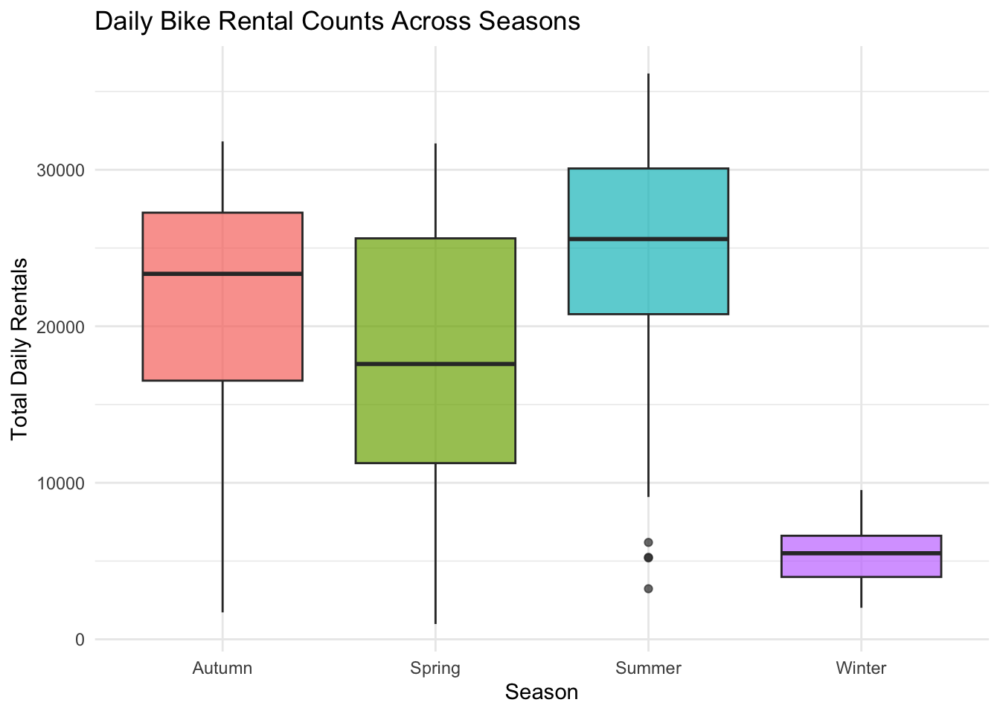
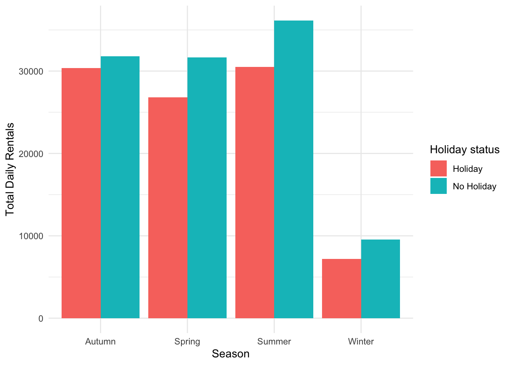
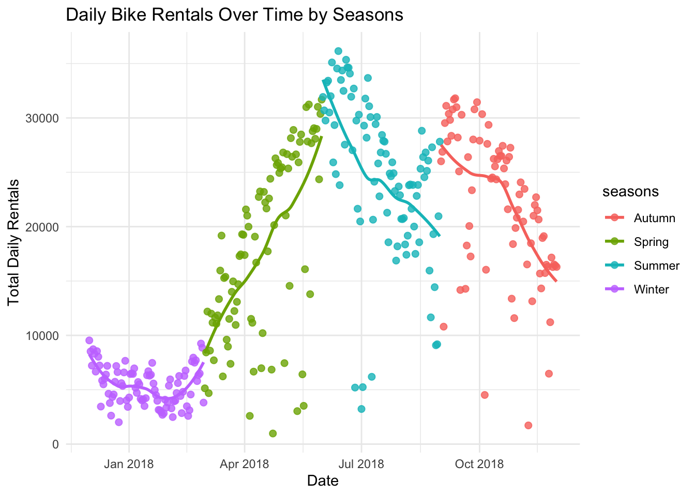

── Attaching core tidyverse packages ──────────────────────── tidyverse 2.0.0 ──
✔ dplyr 1.2.1 ✔ readr 2.2.0
✔ forcats 1.0.1 ✔ stringr 1.6.0
✔ ggplot2 4.0.3 ✔ tibble 3.3.1
✔ lubridate 1.9.5 ✔ tidyr 1.3.2
✔ purrr 1.2.2
── Conflicts ────────────────────────────────────────── tidyverse_conflicts() ──
✖ dplyr::filter() masks stats::filter()
✖ dplyr::lag() masks stats::lag()
ℹ Use the conflicted package (<http://conflicted.r-lib.org/>) to force all conflicts to become errors
Loading required package: parsnip
Loading required package: rpart
── Attaching packages ────────────────────────────────────── tidymodels 1.5.0 ──
✔ broom 1.0.13 ✔ tailor 0.1.0
✔ dials 1.4.4 ✔ tune 2.1.0
✔ infer 1.1.0 ✔ workflows 1.3.0
✔ modeldata 1.6.0 ✔ workflowsets 1.1.1
✔ recipes 1.4.0 ✔ yardstick 1.4.0
✔ rsample 1.3.2
── Conflicts ───────────────────────────────────────── tidymodels_conflicts() ──
✖ scales::discard() masks purrr::discard()
✖ dplyr::filter() masks stats::filter()
✖ recipes::fixed() masks stringr::fixed()
✖ dplyr::lag() masks stats::lag()
✖ dials::prune() masks rpart::prune()
✖ yardstick::spec() masks readr::spec()
✖ recipes::step() masks stats::step() Date Rented Bike Count Hour
0 0 0
Temperature(°C) Humidity(%) Wind speed (m/s)
0 0 0
Visibility (10m) Dew point temperature(°C) Solar Radiation (MJ/m2)
0 0 0
Rainfall(mm) Snowfall (cm) Seasons
0 0 0
Holiday Functioning Day
0 0 Date Rented Bike Count Hour Temperature(°C)
Length :8760 Min. : 0.0 Min. : 0.00 Min. :-17.80
N.unique : 365 1st Qu.: 191.0 1st Qu.: 5.75 1st Qu.: 3.50
N.blank : 0 Median : 504.5 Median :11.50 Median : 13.70
Min.nchar: 10 Mean : 704.6 Mean :11.50 Mean : 12.88
Max.nchar: 10 3rd Qu.:1065.2 3rd Qu.:17.25 3rd Qu.: 22.50
Max. :3556.0 Max. :23.00 Max. : 39.40
Humidity(%) Wind speed (m/s) Visibility (10m) Dew point temperature(°C)
Min. : 0.00 Min. :0.000 Min. : 27 Min. :-30.600
1st Qu.:42.00 1st Qu.:0.900 1st Qu.: 940 1st Qu.: -4.700
Median :57.00 Median :1.500 Median :1698 Median : 5.100
Mean :58.23 Mean :1.725 Mean :1437 Mean : 4.074
3rd Qu.:74.00 3rd Qu.:2.300 3rd Qu.:2000 3rd Qu.: 14.800
Max. :98.00 Max. :7.400 Max. :2000 Max. : 27.200
Solar Radiation (MJ/m2) Rainfall(mm) Snowfall (cm) Seasons
Min. :0.0000 Min. : 0.0000 Min. :0.00000 Length :8760
1st Qu.:0.0000 1st Qu.: 0.0000 1st Qu.:0.00000 N.unique : 4
Median :0.0100 Median : 0.0000 Median :0.00000 N.blank : 0
Mean :0.5691 Mean : 0.1487 Mean :0.07507 Min.nchar: 6
3rd Qu.:0.9300 3rd Qu.: 0.0000 3rd Qu.:0.00000 Max.nchar: 6
Max. :3.5200 Max. :35.0000 Max. :8.80000
Holiday Functioning Day
Length :8760 Length :8760
N.unique : 2 N.unique : 2
N.blank : 0 N.blank : 0
Min.nchar: 7 Min.nchar: 2
Max.nchar: 10 Max.nchar: 3
# A tibble: 2 × 7
functioning_day count_obs mean_rentals stddev_rentals median_rentals
<fct> <int> <dbl> <dbl> <dbl>
1 No 295 0 0 0
2 Yes 8465 729. 642. 542
# ℹ 2 more variables: min_rentals <dbl>, max_rentals <dbl>`summarise()` has regrouped the output.
ℹ Summaries were computed grouped by seasons and holiday.
ℹ Output is grouped by seasons.
ℹ Use `summarise(.groups = "drop_last")` to silence this message.
ℹ Use `summarise(.by = c(seasons, holiday))` for per-operation grouping
(`?dplyr::dplyr_by`) instead.# A tibble: 8 × 8
# Groups: seasons [4]
seasons holiday count_obs mean_rentals stddev_rentals median_rentals
<fct> <fct> <int> <dbl> <dbl> <dbl>
1 Autumn Holiday 4 22754. 5642. 21705
2 Autumn No Holiday 77 22065. 6792. 23472
3 Spring Holiday 3 15247. 10917. 13790
4 Spring No Holiday 87 18002. 8322. 17730
5 Summer Holiday 2 24532. 8438. 24532.
6 Summer No Holiday 90 24824. 7324. 25572.
7 Winter Holiday 8 3759 1561. 3454.
8 Winter No Holiday 82 5574. 1757. 5609
# ℹ 2 more variables: min_rentals <dbl>, max_rentals <dbl>

`geom_smooth()` using formula = 'y ~ x'
sum_bkcnt mean_tmp mean_humid mean_winds mean_vis mean_dptmp
sum_bkcnt 1.0000 0.7531 0.0359 -0.1929 0.1660 0.6505
mean_tmp 0.7531 1.0000 0.4042 -0.2607 0.0023 0.9628
mean_humid 0.0359 0.4042 1.0000 -0.2343 -0.5592 0.6320
mean_winds -0.1929 -0.2607 -0.2343 1.0000 0.2060 -0.2877
mean_vis 0.1660 0.0023 -0.5592 0.2060 1.0000 -0.1536
mean_dptmp 0.6505 0.9628 0.6320 -0.2877 -0.1536 1.0000
mean_slrad 0.7359 0.5503 -0.2744 0.0961 0.2714 0.3832
mean_slrad
sum_bkcnt 0.7359
mean_tmp 0.5503
mean_humid -0.2744
mean_winds 0.0961
mean_vis 0.2714
mean_dptmp 0.3832
mean_slrad 1.0000